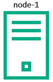
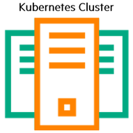
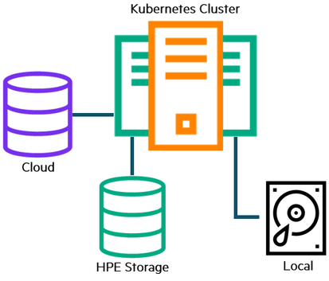
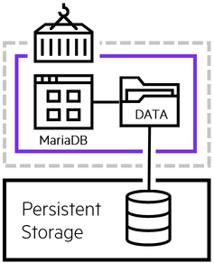
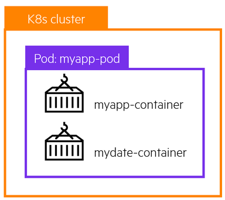
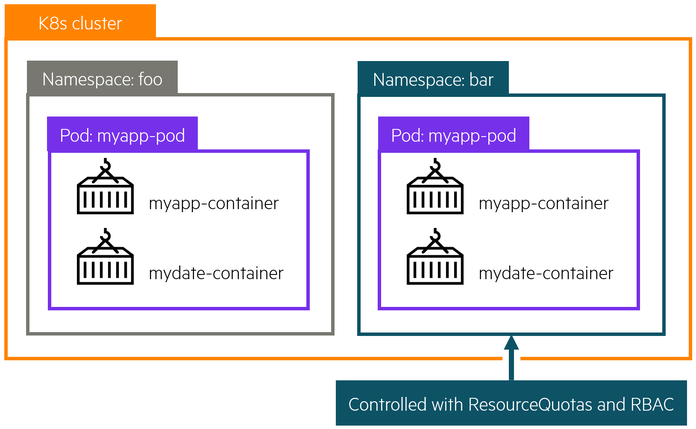
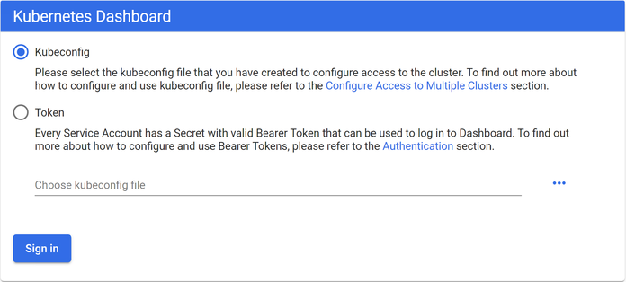
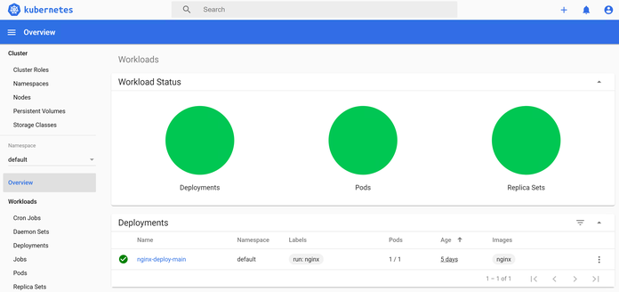
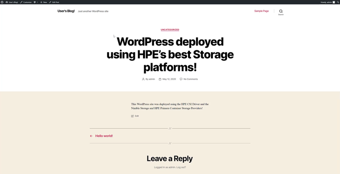

Overview¶
This is a free learning resource from HPE which walks you through various exercises to get you familiar with Kubernetes and provisioning Persistent storage using HPE Nimble Storage, HPE Primera or HPE 3PAR storage systems. This guide is by no means a comprehensive overview of the capabilities of Kubernetes but rather a getting started guide for individuals who wants to learn how to use Kubernetes with persistent storage.
Kubernetes 101¶
The basics¶
The first thing we need to do is to understand the various components of Kubernetes.
Nodes¶

The nodes in a Kubernetes cluster are the machines (VMs, physical servers, etc) that run your applications and cloud workflows. The Kubernetes master controls each node; you’ll rarely interact with nodes directly.
Master¶
The Kubernetes master is responsible for maintaining the desired state of your cluster. When you interact with Kubernetes, such as by using the kubectl command-line interface, you’re communicating with your cluster’s Kubernetes master nodes.
Note
"Master” refers to a collection of processes managing the cluster state. Typically all these processes run on a single node within the cluster, and this node is also referred to as the master. The master can be replicated for availability and redundancy.
Kubernetes Cluster¶

In Kubernetes, nodes pool together their resources (memory and CPU) to distribute workloads. A cluster is comprised of a control plane, master and worker nodes, and physical machines that allow you to run your container workloads on.
Persistent Volumes¶

Because programs running on your cluster aren’t guaranteed to run on a specific node, data can’t be saved to any arbitrary place in the file system. If a program tries to save data to a file for later, but is then relocated onto a new node, the file will no longer be where the program expects it to be.
To store data permanently, Kubernetes uses Persistent Volumes. Local, external storage via SAN arrays, or cloud drives can be attached to the cluster as a Persistent Volume.
Kubernetes Objects
Containers¶

Programs running on Kubernetes are packaged as containers which can run on Linux or Windows. A container image is a lightweight, standalone, executable package of software that includes everything needed to run an application: code, runtime, system tools, system libraries and settings.
Pods¶

A Pod is the basic execution unit of a Kubernetes application–the smallest and simplest unit in the Kubernetes object model that you create or deploy. A Pod encapsulates an application’s container (or, in some cases, multiple containers), storage resources, a unique network IP, and options that govern how the container(s) should run.
Namespaces¶

Kubernetes supports multiple virtual clusters backed by the same physical cluster. These virtual clusters are called namespaces. Namespaces are intended for use in environments with many users spread across multiple teams, or projects. Namespaces are a way to divide cluster resources between multiple users.
Deployments¶
A Deployment provides declarative updates for Pods. You declare a desired state for your pods in your Deployment and Kubernetes will manage it for you automatically.
Services¶
A Kubernetes Service object defines a policy for external clients to access an application within a cluster. By default, Docker uses host-private networking, so containers can talk to other containers only if they are on the same machine. In order for Docker containers to communicate across nodes, there must be allocated ports on the machine’s own IP address, which are then forwarded or proxied to the containers. Coordinating port allocations is very difficult to do at scale, and exposes users to cluster-level issues outside of their control. Kubernetes assumes that pods can communicate with other pods, regardless of which host they land on. Kubernetes gives every pod its own cluster-private IP address, through a Kubernetes Service object, so you do not need to explicitly create links between pods or map container ports to host ports. This means that containers within a Pod can all reach each other’s ports on localhost, and all pods in a cluster can see each other without NAT.
Lab 1: Tour your cluster¶
All of this information presented here is taken from the official documentation found on kubernetes.io/docs.
Overview of kubectl¶
The Kubernetes command-line tool, kubectl, allows you to run commands against Kubernetes clusters. You can use kubectl to deploy applications, inspect and manage cluster resources, and view logs. For a complete list of kubectl operations, see Overview of kubectl on kubernetes.io.
For more information on how to install and setup kubectl on Linux, Windows or MacOS, see Install and Set Up kubectl on kubernetes.io.
Syntax¶
Use the following syntax to run kubectl commands from your terminal window:
kubectl [command] [TYPE] [NAME] [flags]
where command, TYPE, NAME, and flags are:
-
command: Specifies the operation that you want to perform on one or more resources, for example create, get, describe, delete. -
TYPE: Specifies the resource type. Resource types are case-insensitive and you can specify the singular, plural, or abbreviated forms. For example, the following commands produce the same output:
kubectl get pod pod1
kubectl get pods pod1
kubectl get po pod1
NAME: Specifies the name of the resource. Names are case-sensitive. If the name is omitted, details for all resources are displayed, for examplekubectl get pods.
Kubernetes Cheat Sheet
Find more available commands at Kubernetes Cheat Sheet on kubernetes.io.
Getting to know your cluster:¶
Let's run through some simple kubectl commands to get familiar with your cluster.
In order to communicate with the Kubernetes cluster, kubectl looks for a file named config in the $HOME/.kube directory. You can specify other kubeconfig files by setting the KUBECONFIG environment variable or by setting the --kubeconfig flag.
To view your config file:
kubectl config view
Check that kubectl and the config file are properly configured by getting the cluster state.
kubectl cluster-info
If you see a URL response, kubectl is correctly configured to access your cluster.
The output is similar to this:
$ kubectl cluster-info
Kubernetes master is running at https://10.90.200.11:6443
coredns is running at https://10.90.200.11:6443/api/v1/namespaces/kube-system/services/coredns:dns/proxy
kubernetes-dashboard is running at https://10.90.200.11:6443/api/v1/namespaces/kube-system/services/https:kubernetes-dashboard:/proxy
To further debug and diagnose cluster problems, use 'kubectl cluster-info dump'.
Now let's look at the nodes within our cluster.
kubectl get nodes
You should see output similar to below. As you can see, each node has a role master or as worker nodes (<none>).
$ kubectl get nodes
NAME STATUS ROLES AGE VERSION
kube-g1-master1 Ready master 37d v1.18.2
kube-g1-node1 Ready <none> 37d v1.18.2
kube-g1-node2 Ready <none> 37d v1.18.2
You can list pods.
kubectl get pods
Quiz
Did you see any pods listed when you ran kubectl get pods? Why?
If you don't see any pods listed, it is because there are no pods deployed within the default namespace. Now run, kubectl get pods --all-namespaces. Does it look any different?
Pay attention to the first column, NAMESPACES. In our case, we are working in the default namespace. Depending on the type of application and your user access level, applications can be deployed within one or more namespaces.
If you don't see the object (deployment, pod, services, etc) you are looking for, double-check the namespace it was deployed under and use the -n <namespace> flag to view objects in other namespaces.
Now that you have familiarized yourself with your cluster, let's configure the Kubernetes dashboard.
Lab 2: Install K8s dashboard¶
Dashboard is a web-based Kubernetes user interface. You can use Dashboard to deploy containerized applications to a Kubernetes cluster, troubleshoot your containerized application, and manage the cluster resources. You can use Dashboard to get an overview of applications running on your cluster, as well as for creating or modifying individual Kubernetes resources (such as Deployments, Jobs, DaemonSets, etc). For example, you can scale a Deployment, initiate a rolling update, restart a pod or deploy new applications using a deploy wizard.
Dashboard also provides information on the state of Kubernetes resources in your cluster and on any errors that may have occurred.
Please refer to Kubernetes Web UI (Dashboard) on kubernetes.io.
Deploying the Dashboard UI¶
The Dashboard UI is not deployed by default. To deploy it, run the following command.
kubectl apply -f https://raw.githubusercontent.com/kubernetes/dashboard/v2.0.0/aio/deploy/recommended.yaml
Accessing the Dashboard UI¶
You can access Dashboard using kubectl from your desktop.
kubectl proxy
Open a web browser, copy the following URL to access the Dashboard.
http://localhost:8001/api/v1/namespaces/kubernetes-dashboard/services/https:kubernetes-dashboard:/proxy/
You should see something similar to the following:

Note
The Dashboard UI can only be accessed from the machine where the command is executed. See kubectl proxy --help for more options.
Create the Admin Service Account¶
To protect your cluster data, Dashboard deploys with a minimal RBAC configuration by default. Currently, Dashboard only supports logging in with a Bearer Token. To create a token for this demo, we will create an admin user.
Warning
The admin user created in the tutorial will have administrative privileges and is for educational purposes only.
Open a second terminal, if you don't have one open already.
The below YAML declarations are meant to be created with kubectl create. Either copy the content to a file on the host where kubectl is being executed, or copy & paste into the terminal, like this:
kubectl create -f-
< paste the YAML >
^D (CTRL + D)
Step by step:
kubectl create -f-
Press Enter.
Copy the code below into the terminal.
apiVersion: v1
kind: ServiceAccount
metadata:
name: admin-user
namespace: kube-system
Press Enter and Ctrl-D.
Create ClusterRoleBinding¶
Let's create the ClusterRoleBinding for the new admin-user. We will apply the cluster-admin role to the admin-user.
kubectl create -f-
Press Enter.
Copy the code below into the terminal.
apiVersion: rbac.authorization.k8s.io/v1
kind: ClusterRoleBinding
metadata:
name: admin-user
roleRef:
apiGroup: rbac.authorization.k8s.io
kind: ClusterRole
name: cluster-admin
subjects:
- kind: ServiceAccount
name: admin-user
namespace: kube-system
Press Enter and Ctrl-D.
Get Token¶
Now we are ready to get the token from the admin-user in order to log into the dashboard. Run the following command:
kubectl -n kube-system get secret | grep admin-user
It will return something similar to: admin-user-token-n7jx9.
Now run.
kubectl -n kube-system describe secret admin-user-token-n7jx9
Copy the token value.
Name: admin-user-token-n7jx9
Namespace: kube-system
Labels: <none>
Annotations: kubernetes.io/service-account.name: admin-user
kubernetes.io/service-account.uid: 7e9a4b56-e692-496a-8767-965076a282a4
Type: kubernetes.io/service-account-token
Data
====
namespace: 11 bytes
token: <your token will be shown here>
ca.crt: 1025 bytes
Switch back over to your browser and paste the token into the dashboard and Click - Sign In. From here, you can see the health of your cluster as well as inspect various objects (Pods, StorageClass, Persistent Volume Claims) and manage the cluster resources.
You should see something similar to the following:

Lab 3: Deploy your first pod¶
A pod is a collection of containers sharing a network and mount namespace and is the basic unit of deployment in Kubernetes. All containers in a pod are scheduled on the same node.
Let's create a simple nginx webserver.
kubectl create -f-
Press Enter.
Copy and paste the following:
apiVersion: apps/v1
kind: Deployment
metadata:
labels:
run: nginx
name: first-nginx-pod
spec:
replicas: 1
selector:
matchLabels:
run: nginx-first-pod
template:
metadata:
labels:
run: nginx-first-pod
spec:
containers:
- image: nginx
name: nginx
Press Enter and Ctrl-D.
We can now see the pod running.
kubectl get pods
NAME READY STATUS RESTARTS AGE
first-nginx-pod-5bb4787f8d-7ndj6 1/1 Running 0 6m39s
We can inspect the pod further using the kubectl describe command:
Name: first-nginx-pod-5bb4787f8d-7ndj6
Namespace: default
Priority: 0
Node: kube-g1-node1/10.90.200.184
Start Time: Mon, 02 Mar 2020 17:09:20 -0600
Labels: pod-template-hash=5bb4787f8d
run=nginx-first-pod
Annotations: <none>
Status: Running
IP: 10.233.82.7
IPs:
IP: 10.233.82.7
Controlled By: ReplicaSet/first-nginx-pod-5bb4787f8d
Containers:
nginx:
Container ID: docker://a0938f10d28cb0395b0c2c324ef0c74ecdcdc63e556863c53ee7a88d56d
Image: nginx
Image ID: docker-pullable://nginx@sha256:380eb808e2a3b0a15037efefcabc5b4e03d666d03
Port: <none>
Host Port: <none>
State: Running
Started: Mon, 20 Aug 2020 17:09:32 -0600
Ready: True
Restart Count: 0
Environment: <none>
Mounts:
/var/run/secrets/kubernetes.io/serviceaccount from default-token-m2vbl (ro)
Conditions:
Type Status
Initialized True
Ready True
ContainersReady True
PodScheduled True
Volumes:
default-token-m2vbl:
Type: Secret (a volume populated by a Secret)
SecretName: default-token-m2vbl
Optional: false
QoS Class: BestEffort
Node-Selectors: <none>
Tolerations: node.kubernetes.io/not-ready:NoExecute for 300s
node.kubernetes.io/unreachable:NoExecute for 300s
Events:
Type Reason Age From Message
---- ------ ---- ---- -------
Normal Scheduled <unknown> default-scheduler Successfully assigned default/first-nginx-pod
Normal Pulling 54s kubelet, kube-g1-node1 Pulling image "nginx"
Normal Pulled 46s kubelet, kube-g1-node1 Successfully pulled image "nginx"
Normal Created 44s kubelet, kube-g1-node1 Created container nginx
Normal Started 43s kubelet, kube-g1-node1 Started container nginx
Let's find the IP address of the pod.
kubectl get pod first-nginx-pod-5bb4787f8d-7ndj6 -o=jsonpath='{.status.podIP}'
The output should be similar to the following.
$ kubectl get pod first-nginx-pod-5bb4787f8d-7ndj6 -o=jsonpath='{.status.podIP}'
10.233.82.7
This IP address (10.233.82.7) is only accessible from within the cluster, so let's use port-forward to expose the pod port temporarily outside the cluster.
kubectl port-forward first-nginx-pod-5bb4787f8d-7ndj6 80:80
Forwarding from 127.0.0.1:80 -> 8080
Forwarding from [::1]:80 -> 8080
Note
If you have something already running locally on port 80, modify the port-forward to an unused port (i.e. 5000:80). port-forward is meant for temporarily exposing an application outside of a Kubernetes cluster. For a more permanent solution, look into Ingress Controllers.
Finally, we can open a browser and go to http://127.0.0.1 and should see the following.

You have successfully deployed your first Kubernetes pod.
With the pod running, we can log in and explore the pod. If you don't already, open another shell and run:
kubectl exec -it <pod_name> /bin/bash
You can explore the pod and run various commands. Some commands might not be available within the pod. Why would that be?
root@first-nginx-pod-5bb4787f8d-7ndj6:/# df -h
Filesystem Size Used Avail Use% Mounted on
overlay 46G 8.0G 38G 18% /
tmpfs 64M 0 64M 0% /dev
tmpfs 1.9G 0 1.9G 0% /sys/fs/cgroup
/dev/mapper/centos-root 46G 8.0G 38G 18% /etc/hosts
shm 64M 0 64M 0% /dev/shm
tmpfs 1.9G 12K 1.9G 1% /run/secrets/kubernetes.io/serviceaccount
tmpfs 1.9G 0 1.9G 0% /proc/acpi
tmpfs 1.9G 0 1.9G 0% /proc/scsi
tmpfs 1.9G 0 1.9G 0% /sys/firmware
Or modify the webpage:
echo Hello from Kubernetes Storage > /usr/share/nginx/html/index.html
Once done, press Ctrl-D to exit the pod. Use Ctrl+C to exit the port-forwarding.
Lab 4: Install the CSI driver¶
To get started with the deployment, the HPE CSI Driver is deployed using industry standard means, either a Helm chart or an Operator. For this tutorial, we will be using Helm to the deploy the HPE CSI driver.
The official Helm chart for the HPE CSI Driver for Kubernetes is hosted on Artifact Hub. There, you will find the configuration and installation instructions for the chart.
Installing the chart¶
To install the chart with the name hpe-csi, add the HPE CSI Driver for Kubernetes helm repo.
helm repo add hpe https://hpe-storage.github.io/co-deployments
helm repo update
Install the latest chart:
helm install hpe-csi hpe/hpe-csi-driver --namespace kube-system
Wait a few minutes as the deployment finishes.
Verify that everything is up and running correctly with the listing out the pods.
kubectl get pods --all-namespaces -l 'app in (nimble-csp, primera3par-csp, hpe-csi-node, hpe-csi-controller)'
The output is similar to this:
$ kubectl get pods --all-namespaces -l 'app in (nimble-csp, primera3par-csp, hpe-csi-node, hpe-csi-controller)'
NAMESPACE NAME READY STATUS RESTARTS AGE
kube-system csp-service-5df8679cf7-m4jcw 1/1 Running 0 5m
kube-system hpe-csi-controller-84d8569476-9pk74 5/5 Running 0 5m
kube-system hpe-csi-node-qt74m 2/2 Running 0 5m
kube-system primera3par-csp-66f775b555-sfmnp 1/1 Running 0 5m
If all of the components show in Running state, then the HPE CSI driver for Kubernetes and the corresponding Container Storage Providers have been successfully deployed.
Creating a Secret¶
When the HPE CSI Driver is deployed using the Helm chart or Operator, a Secret needs to be created based upon the backend type (nimble or primera3par ), backend IP, and credentials. This Secret is used by the CSI sidecars in the StorageClass to authenticate to a specific backend for CSI operations. In order to add a new Secret or manage access to multiple backends, additional Secrets will need to be created per backend.
Secret Requirements
- Each
Secretname must be unique. - servicePort should be set to 8080.
Create a new Secret, specify the name, Namespace, backend username, backend password, and the backend IP address to be used by the CSP.
kubectl create -f-
Copy and paste the following:
apiVersion: v1
kind: Secret
metadata:
name: custom-secret
namespace: kube-system
stringData:
serviceName: nimble-csp-svc
servicePort: "8080"
backend: 192.168.1.2
username: admin
data:
# echo -n "admin" | base64
password: YWRtaW4=
apiVersion: v1
kind: Secret
metadata:
name: custom-secret
namespace: kube-system
stringData:
serviceName: primera3par-csp-svc
servicePort: "8080"
backend: 10.10.0.2
username: 3paradm
data:
# echo -n "3pardata" | base64
password: M3BhcmRhdGE=
Press Enter and Ctrl-D.
Now let's look at the available StorageClasses.
You should now see the Secret in the "kube-system" Namespace:
kubectl -n kube-system get secret/custom-secret
NAME TYPE DATA AGE
custom-secret Opaque 5 1m
Creating a StorageClass¶
Now we will create a StorageClass that will be used in the following exercises. A StorageClass specifies the provisioner to use (in our case the HPE CSI Driver) and the volume parameters (such as Protection Templates, Performance Policies, CPG, etc.) of the volume that we want to create and can be used to differentiate between storage levels and usages.
This concept is sometimes called “profiles” in other storage systems. A cluster can have multiple StorageClasses allowing users to create storage claims tailored for their specific application requirements.
Create an hpe-standard StorageClass based upon the CSP deployed. This StorageClass example will use the custom-secret we created in the previous step, if you used a different name make sure to modify the StorageClass accordingly.
kubectl create -f-
Copy and paste the following:
apiVersion: storage.k8s.io/v1
kind: StorageClass
metadata:
name: hpe-standard
annotations:
storageclass.kubernetes.io/is-default-class: "true"
provisioner: csi.hpe.com
parameters:
csi.storage.k8s.io/fstype: xfs
csi.storage.k8s.io/provisioner-secret-name: custom-secret
csi.storage.k8s.io/provisioner-secret-namespace: kube-system
csi.storage.k8s.io/controller-publish-secret-name: custom-secret
csi.storage.k8s.io/controller-publish-secret-namespace: kube-system
csi.storage.k8s.io/node-stage-secret-name: custom-secret
csi.storage.k8s.io/node-stage-secret-namespace: kube-system
csi.storage.k8s.io/node-publish-secret-name: custom-secret
csi.storage.k8s.io/node-publish-secret-namespace: kube-system
csi.storage.k8s.io/controller-expand-secret-name: custom-secret
csi.storage.k8s.io/controller-expand-secret-namespace: kube-system
performancePolicy: "SQL Server"
description: "Volume from HPE CSI Driver"
accessProtocol: iscsi
limitIops: "76800"
allowOverrides: description,limitIops,performancePolicy
allowVolumeExpansion: true
apiVersion: storage.k8s.io/v1
kind: StorageClass
metadata:
name: hpe-standard
annotations:
storageclass.kubernetes.io/is-default-class: "true"
provisioner: csi.hpe.com
parameters:
csi.storage.k8s.io/fstype: ext4
csi.storage.k8s.io/provisioner-secret-name: custom-secret
csi.storage.k8s.io/provisioner-secret-namespace: kube-system
csi.storage.k8s.io/controller-publish-secret-name: custom-secret
csi.storage.k8s.io/controller-publish-secret-namespace: kube-system
csi.storage.k8s.io/node-stage-secret-name: custom-secret
csi.storage.k8s.io/node-stage-secret-namespace: kube-system
csi.storage.k8s.io/node-publish-secret-name: custom-secret
csi.storage.k8s.io/node-publish-secret-namespace: kube-system
csi.storage.k8s.io/controller-expand-secret-name: custom-secret
csi.storage.k8s.io/controller-expand-secret-namespace: kube-system
cpg: SSD_r6
provisioning_type: tpvv
accessProtocol: iscsi
allowOverrides: cpg,provisioning_type
allowVolumeExpansion: true
Press Enter and Ctrl-D.
Now let's look at the available StorageClasses.
$ kubectl get sc
NAME PROVISIONER AGE
hpe-standard (default) csi.hpe.com 2m
Note
We set hpe-standard StorageClass as default using the annotation storageclass.kubernetes.io/is-default-class: "true". To learn more about configuring a default StorageClass, see Default StorageClass on kubernetes.io.
Creating a PersistentVolumeClaim¶
With a StorageClass available, we can create a PVC to request an amount of storage for our application.
kubectl create -f-
Copy and paste the following:
apiVersion: v1
kind: PersistentVolumeClaim
metadata:
name: my-pvc
spec:
accessModes:
- ReadWriteOnce
resources:
requests:
storage: 50Gi
Press Enter and Ctrl-D.
Note
We can use storageClassName to override the default StorageClass with another available StorageClass.
We can see the my-pvc PersistentVolumeClaim created.
kubectl get pvc
NAME STATUS VOLUME CAPACITY ACCESS MODES STORAGECLASS AGE
my-pvc Bound pvc-70d5caf8-7558-40e6-a8b7-77dfcf8ddcd8 50Gi RWO hpe-standard 72m
We can inspect the PVC further for additional information.
kubectl describe pvc my-pvc
The output is similar to this:
$ kubectl describe pvc my-pvc
Name: my-pvc
Namespace: default
StorageClass: hpe-standard
Status: Bound
Volume: pvc-70d5caf8-7558-40e6-a8b7-77dfcf8ddcd8
Labels: <none>
Annotations: pv.kubernetes.io/bind-completed: yes
pv.kubernetes.io/bound-by-controller: yes
volume.beta.kubernetes.io/storage-provisioner: csi.hpe.com
Finalizers: [kubernetes.io/pvc-protection]
Capacity: 50Gi
Access Modes: RWO
VolumeMode: Filesystem
Mounted By: <none>
Events: <none>
We can also inspect the volume in a similar manner.
kubectl describe pv <volume_name>
The output is similar to this:
$ kubectl describe pv pvc-70d5caf8-7558-40e6-a8b7-77dfcf8ddcd8
Name: pvc-70d5caf8-7558-40e6-a8b7-77dfcf8ddcd8
Labels: <none>
Annotations: pv.kubernetes.io/provisioned-by: csi.hpe.com
Finalizers: [kubernetes.io/pv-protection]
StorageClass: hpe-standard
Status: Bound
Claim: default/my-pvc
Reclaim Policy: Delete
Access Modes: RWO
VolumeMode: Filesystem
Capacity: 50Gi
Node Affinity: <none>
Message:
Source:
Type: CSI (a Container Storage Interface (CSI) volume source)
Driver: csi.hpe.com
VolumeHandle: 063aba3d50ec99d866000000000000000000000001
ReadOnly: false
VolumeAttributes: accessProtocol=iscsi
allowOverrides=description,limitIops,performancePolicy
description=Volume from HPE CSI Driver
fsType=xfs
limitIops=76800
performancePolicy=SQL Server
storage.kubernetes.io/csiProvisionerIdentity=1583271972595-8081-csi.hpe.com
volumeAccessMode=mount
Events: <none>
With the describe command, you can see the volume parameters applied to the volume.
Let's recap what we have learned.
- We created a default
StorageClassfor our volumes. - We created a
PVCthat created a volume from the storageClass. - We can use kubectl get to list the
StorageClass,PVCandPV. - We can use kubectl describe to get details on the
StorageClass,PVCorPV
At this point, we have validated the deployment of the HPE CSI Driver and are ready to deploy an application with persistent storage.
Lab 5: Deploying Wordpress¶
To begin, we will be using the hpe-standard StorageClass we created previously. If you don't have hpe-standard available, please refer to StorageClass for instructions on creating a StorageClass.
Create a PersistentVolumeClaim for MariaDB for use by Wordpress. This object creates a PersistentVolume as defined, make sure to reference the correct .spec.storageClassName.
kind: PersistentVolumeClaim
apiVersion: v1
metadata:
name: data-my-wordpress-mariadb-0
spec:
accessModes:
- ReadWriteOnce
resources:
requests:
storage: 50Gi
storageClassName: hpe-standard
Next let's make another for the Wordpress application.
apiVersion: v1
kind: PersistentVolumeClaim
metadata:
name: my-wordpress
spec:
accessModes:
- ReadWriteOnce
resources:
requests:
storage: 20Gi
storageClassName: hpe-standard
Let's again verify the PersistentVolume were created successfully.
kubectl get pv
NAME STATUS VOLUME CAPACITY ACCESS MODES STORAGECLASS AGE
data-my-wordpress-mariadb-0 Bound pvc-1abdb7d7-374e-45b3-8fa1-534131ec7ec6 50Gi RWO hpe-standard 1m
my-wordpress Bound pvc-ff6dc8fd-2b14-4726-b608-be8b27485603 20Gi RWO hpe-standard 1m
The above output means that the HPE CSI Driver successfully provisioned a new volume based upon the hpe-standard StorageClass. The volume is not attached to any node yet. It will only be attached to a node once a scheduled workload requests the PersistentVolumeClaim.
Now, let's use Helm to deploy Wordpress using the PVC created previously. When Wordpress is deployed, the volumes will be attached, formatted and mounted.
The first step is to add the Wordpress chart.
helm repo add bitnami https://charts.bitnami.com/bitnami
helm repo update
helm search repo bitnami/wordpress
NAME CHART VERSION APP VERSION DESCRIPTION
bitnami/wordpress 9.2.1 5.4.0 Web publishing platform for building blogs and ...
Deploy Wordpress by setting persistence.existingClaim=<existing_PVC> to the PVC my-wordpress created in the previous step.
helm install my-wordpress bitnami/wordpress --version 9.2.1 --set service.type=ClusterIP,wordpressUsername=admin,wordpressPassword=adminpassword,mariadb.mariadbRootPassword=secretpassword,persistence.existingClaim=my-wordpress,allowEmptyPassword=false
Check to verify that Wordpress and MariaDB were deployed and are in the Running state. This may take a few minutes.
kubectl get pods
NAME READY STATUS RESTARTS AGE
my-wordpress-69b7976c85-9mfjv 1/1 Running 0 2m
my-wordpress-mariadb-0 1/1 Running 0 2m
Finally let's take a look at the Wordpress site. You can use kubectl port-forward to access the Wordpress application from within the Kubernetes cluster to verify everything is working correctly.
kubectl port-forward svc/my-wordpress 80:80
Forwarding from 127.0.0.1:80 -> 8080
Forwarding from [::1]:80 -> 8080
Note
If you have something already running locally on port 80, modify the port-forward to an unused port (i.e. 5000:80).
Open a browser on your workstation to http://127.0.0.1 and you should see, "Hello World!".
Access the admin console at: http://127.0.0.1/admin using the "admin/adminpassword" used to deploy the Helm Chart.

Happy Blogging!
This completes the tutorial of using the HPE CSI Driver with HPE storage to create Persistent Volumes within Kubernetes. This is just the beginning of the capabilities of the HPE Storage integrations within Kubernetes. We recommend exploring SCOD further and the specific HPE Storage CSP (Nimble, Primera, and 3PAR) to learn more.